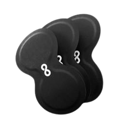
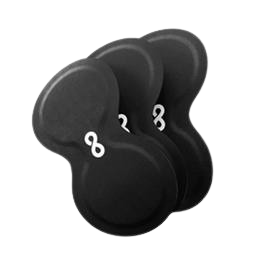

How It May Feel?
*Everyone’s body is different and results may vary. The notes below reflect
common experiences reported by customers.
After 1 hour
- You may notice a lighter, clearer head and easier focus
- Subtle lift in energy without a jolt or jitters
- A calmer, more even mood as your day settles in
After 3 hours
- Steadier, more sustainable energy for work or training
- Sharper concentration with fewer dips, less urge for caffeine
- Early ease in body tension, a sense that recovery is underway
By end of day
- Energy that feels “there when you need it,” fewer afternoon slumps
- Clearer thinking, reduced brain fog, better follow-through on tasks
- Post-workout or travel fatigue may feel less heavy
After one week
- Many report a more consistent daily rhythm, with easier mornings
- Work blocks feel smoother, fewer peaks and crashes
- Recovery days feel more productive, some notice better sleep quality
💡 Tips for best results:
- Stay hydrated, place the patch on clean skin, and use at a similar time each day
- If you pair it with your routine, choose what fits your goal — for example focus in the morning, recovery on heavier days
- Talk to your clinician if you have questions about timing or other medications
✔️ NO NEEDLES
✔️ USE ANYTIME, ON THE GO
✔️ MANY REPORT SAME-DAY FEEL
 
